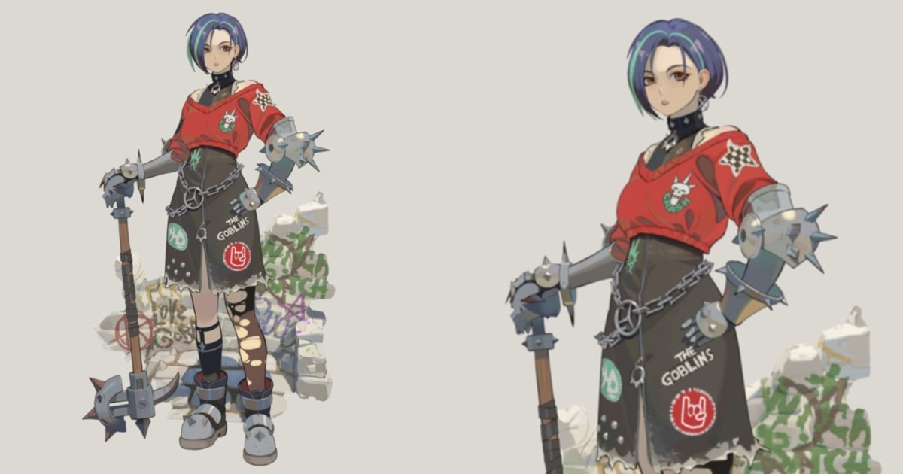

Punk Knight：把 2D 概念直接投射到 ZBrush 雕刻以鎖定造型與配色
David Papunashvili 分享 stylized character 流程，直接把 2D concept 投射到 sculpt 作比例與色彩比對，並以 PolyPaint 建立插畫式 3D 外觀。

角色製作 ★★★★☆
完整分析
角色流程
2D concept 直接投射到 sculpt 可降低 stylized 轉 3D 時比例漂移。
Production 價值
適合強設計語言角色的 shape/color matching。
驗證方式
用正側概念比較傳統 eyeballing 與投射參考的修正回合。